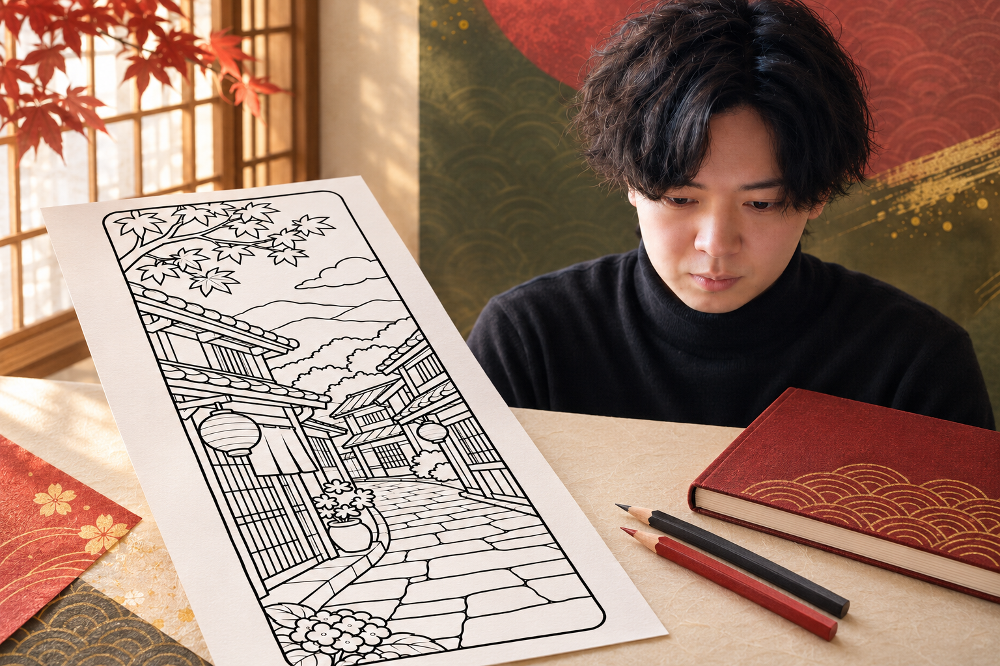
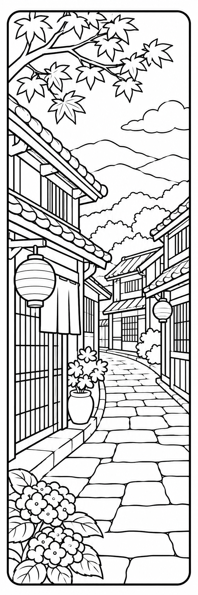
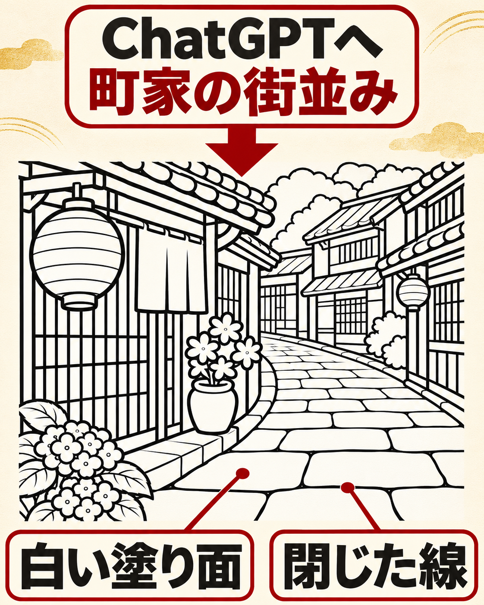
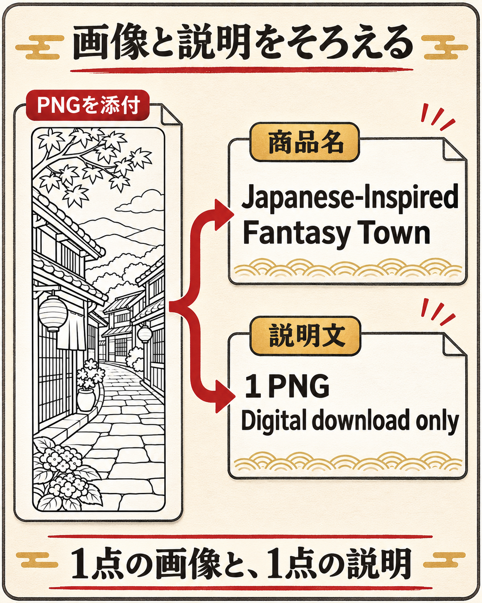
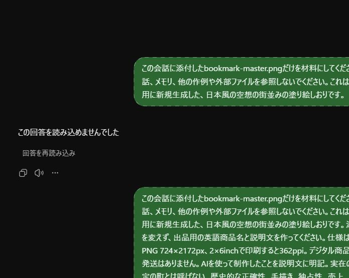
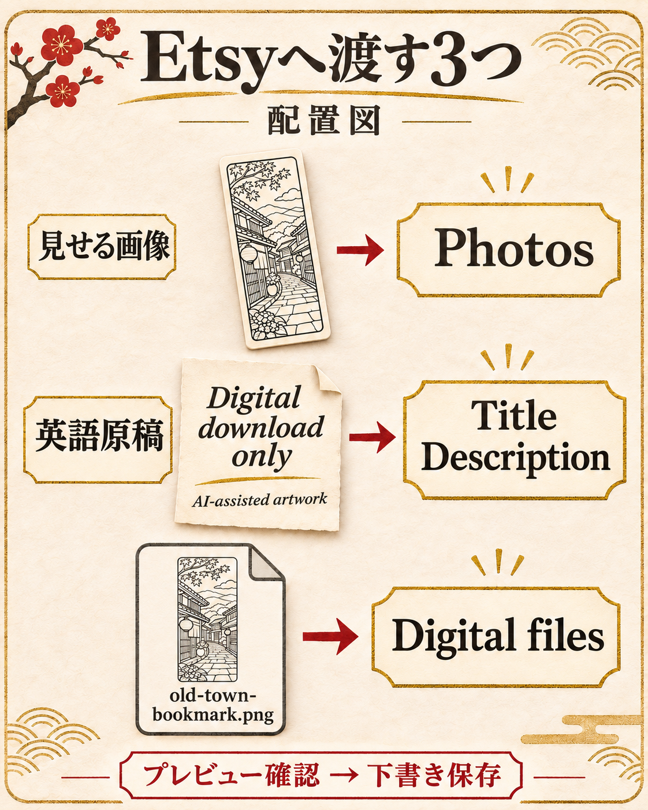
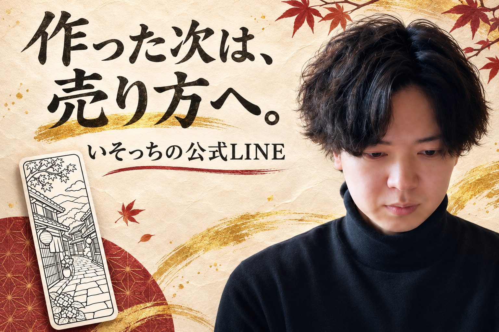

いそっち式 AI塗り絵しおり販売マニュアル

解説動画
本人の解説動画は
撮影後に掲載します。
絵と英語で、止まる。
- 絵を描くところから始められない
- 英語の商品説明で手が止まる
- 生成画像の渡し方が分からない
線画と英語原稿をそろえて、海外向けの出品準備へ。町家と石畳のしおりを作ります。

作るものを決める。
僕がおすすめしているのは、日本らしい風景を足すこと。町家・提灯・石畳を選びます。
完成見本を開く

練習用の作例1点。PNG 724×2172px。2×6inchで印刷すると362PPIです。
 ChatGPTで線画を作る
ChatGPTで線画を作る
線画プロンプトを ChatGPTの入力欄へ貼って送信。塗り面と線を確認します。
ChatGPTの入力欄へ貼って送信。塗り面と線を確認します。

線画プロンプト
日本らしい街並みを題材に、印刷して塗れるしおりの線画を1点、実際に画像生成してください。 ・縦横比1:3。可能なら724×2172px以上の同じ比率。 ・町家の木格子、瓦屋根、文字のない提灯、石畳、遠くの山を組み合わせた、自然な遠近感のある空想の街並み。 ・白地に黒い輪郭線。色、灰色の陰影、黒い塗りつぶし、文字、ロゴは入れない。 ・大人が塗りやすい閉じた面を残す。細部を詰めすぎない。 ・枠を四辺から少し内側に置き、線画を枠の内側に収める。 ・人物、机、手、商品モックアップは描かず、印刷する線画だけを出力。 ・実在する特定の場所の正確な描写とはしない。 生成後、実際の画像寸法を確認できるなら教えてください。確認できない場合は推測せず、そのことを伝えてください。
線や塗り面を直したいとき
この画像の題材・構図・1:3の縦横比を保って修正してください。黒く塗りつぶされた部分と灰色の陰影を白い塗り面へ変え、輪郭線が途切れた部分をつないでください。枠からはみ出した部分だけを内側へ収めてください。色、文字、ロゴや新しい小物は追加しないでください。修正版を画像として出力してください。
画像を開いて「保存」。old-town-bookmark.pngとして開き直し、枠切れがないか確認します。
保存・サイズの補足
スマホのChatGPTは、生成画像を開き、保存操作で端末へダウンロードします。保存先は端末によって異なるので「写真」または「ファイル」で開き直してください。ピクセル寸法は画像情報で確認。2×6inchで印刷するなら横のピクセル数÷2がPPIです。比率が1:3でなければ、引き伸ばさず同じ比率で作り直します。
保存したPNGを英語原稿へ
同じチャットにPNGを添付し、英語原稿プロンプトを送信。点数・寸法・デジタル商品という説明を照合します。

英語原稿プロンプト
添付した塗り絵しおりのPNGを見て、Etsy用の英語商品名と商品説明文を作ってください。 受取物は1デザインのPNG1点。印刷サイズは2×6inch（50.8×152.4mm）。ピクセル寸法は添付ファイルを確認して記載し、そのサイズでのPPIを計算してください。寸法を確認できなければ、先に私へ聞いてください。 タイトルは15語未満・140文字以内。題材、塗り絵しおり、PNG、印刷用だと分かる自然な英語にしてください。 説明には、受取物と実寸、印刷・塗る・切る使い方、Digital download only / No physical product will be shipped、AIを使用した制作であること、購入者の個人利用のみ・再配布と再販売不可を含めてください。 今回の題材は日本風の空想の街並みです。実在の京都など特定の町、手描き、歴史的正確性、独占性、売上、レビュー数、価格は創作しないでください。 商品名と説明を別々にコピーできる形で出してください。
この作例の英語原稿
Title
Japanese-Inspired Fantasy Town Coloring Bookmark PNG | Printable 2x6 Inch Digital Download
Description
Enjoy a relaxing coloring activity with this printable bookmark featuring an imaginary Japanese-inspired townscape. The black-and-white artwork depicts a peaceful stone-paved street, traditional-style buildings, lanterns, leafy branches, flowers, and distant mountains. WHAT YOU WILL RECEIVE 1 digital PNG image / 1 bookmark design File: old-town-bookmark.png Image resolution: 724 x 2172 pixels Intended print size: 2 x 6 inches (50.8 x 152.4 mm) Resolution at 2 x 6 inches: 362 PPI Digital download only. No physical product will be shipped. HOW TO PRINT AND USE Download the PNG. Open it in your printing software and set the image size to 2 x 6 inches. Print at 100% scale on suitable paper or cardstock. Color the illustration and cut around the outer border. Confirm dimensions in print preview; settings and results may vary. AI CREATION DISCLOSURE This coloring illustration was created with the assistance of artificial intelligence (AI). The scene is imaginary and inspired by Japanese aesthetics. It does not represent a specific real-world town or historically accurate location. PERSONAL USE For the purchaser's personal use only. You may print copies for your own coloring and bookmarking activities. Redistribution, resale, sharing the digital file, and commercial use are not permitted.
ChatGPTで生成した実画面
PCの実画面です。今回のPNGを添付し、商品情報を作成した回答の一部。タップで原寸を開けます。

Etsyへ出品準備
PCでShop Manager → Listings → Add a listingへ。「Digital files」を選び、画像・原稿・購入者用PNGを入れます。

出店・費用・下書きの確認
ショップ未開設なら、先に出店条件と費用を確認して登録します。出品ではカテゴリー、制作方法、価格等の必須欄も入力。Photosは見せる画像、Digital filesは購入者が受け取るファイルです。タイトルや説明が1点のPNGと一致するかプレビューし、まずSave as Draftで保存。公開前に手数料・価格・利用条件を確認してください。
即時ダウンロードは最大5ファイル、各20MB。AIを使って作ったことを商品説明に記載します。この見本を自分の独自作品としてそのまま出すのではなく、自分で題材と線を作り込んでから出品します。
寝る前に、まとめて任せるなら
僕は毎晩、寝る前に「これ朝までにやっといて」と指示してます。画像と英語原稿を一括で任せる指示も用意しました。
一括制作の指示文
日本風の空想の街並みを描いた塗り絵しおり1点について、画像と英語原稿を一括で制作してください。過去の会話に依存せず、この指示を仕様とします。 1. 町家の木格子、瓦屋根、文字のない提灯、石畳、遠くの山を描いた、白地に黒線の塗り絵画像を生成。縦横比1:3、可能なら724×2172px以上の同じ比率。人物・色・灰色の陰影・黒い塗りつぶし・文字・ロゴは入れない。四辺内側の枠に収め、塗るための白い閉じた面を残す。 2. 結果を確認し、線切れ・黒い塗りつぶし・枠切れがあれば修正。実行できない修正は未完了として報告。 3. 実際の画像寸法を確認し、PNGをold-town-bookmark.pngとして保存してダウンロードできる形で渡す。印刷時は2×6inch。実寸を確認できない場合は推測しない。 4. 1デザイン・PNG1点という実ファイルと一致する、Etsy向け英語タイトル（15語未満・140文字以内）と説明文を作成し、etsy-listing-en.txtとして保存。説明文には実際のピクセル寸法・2×6inch時のPPI・印刷と使用方法・デジタル商品のみで現物発送なし・AI使用・個人利用のみ・再配布再販売不可を記載。 5. 完成ファイルを開き直し、点数・寸法・画像と原稿の一致を確認。実施できた確認と未実施の確認を分けて報告。 実在の特定の町、手描き、売上、レビュー数や価格は作らない。Etsyへの入力・出品・公開・購入・課金、新規アカウントや接続は行わない。使える画像生成やファイル出力機能がなければ、その工程を未完了として明記する。
「朝まで」と送るだけで予約完了とは限りません。予約機能を使う場合は、日時と実行できる作業を確認します。
予約機能で進める場合の指示
次の制作を明日午前7時（Asia/Tokyo）に1回実行する予約タスクとして設定できるか確認してください。利用可能なタスクで画像生成・ファイル保存が実行できない場合は、予約したことにせず、不足する機能を教えてください。予約できる場合は実行日時・タイムゾーン・作業内容が分かる確認を出してください。 制作内容：日本風の空想の街並みの塗り絵しおり1デザイン。町家・文字のない提灯・石畳・遠くの山。1:3の縦長で白地に黒い輪郭線のみ、塗りやすい白い面、枠内に収める。人物・文字・色・陰影・黒い塗りつぶしはなし。可能なら724×2172px以上の同じ比率でPNG生成し、実寸を確認してold-town-bookmark.pngとして渡す。次に、1デザイン・PNG1点・印刷2×6inchの事実と実寸/PPIに一致するEtsy向け英語商品名（15語未満・140文字以内）と説明をetsy-listing-en.txtとして渡す。説明にはデジタル商品のみ・現物発送なし・AI使用・個人利用のみ・再配布再販売不可を含める。画像と原稿を照合し、未完了工程は区別する。 実在地の正確な絵、手描き、売上やレビュー数、価格は作らない。外部サービスへの出品・公開・送信・購入・課金・新規接続はしない。予約作成と実際の制作成功を分け、生成と保存が終わった後に結果を報告してください。
予約と、実際の完成を分けて確認
ChatGPTで利用できるタスク機能は、アカウント・アプリ・設定で異なります。予約を作成した確認が出たか、実行日時とタイムゾーン、画像生成とファイル保存を行えるかを確認。翌朝は結果の画像、英語原稿、ダウンロードできる実ファイルを開きます。未完了なら手動の01・02へ戻って仕上げます。
まず、1枚を開いてみる
線画PNGと英語原稿が同じ内容なら、制作の一周は完了。キットのPNGを保存して開き、次は自分の題材で1枚。
制作キットを保存PNG・英語原稿・全文プロンプト・保存用マニュアル入り。ZIPを展開し「読む.html」を開きます。
作例PNGだけを保存次は、このしおりの見せ方や価格、販売の進め方。AI画像の販売方法や、面倒な作業を自動化するノウハウは、公式LINEで案内しています。

公式LINEでノウハウを受け取る無料でご案内します。